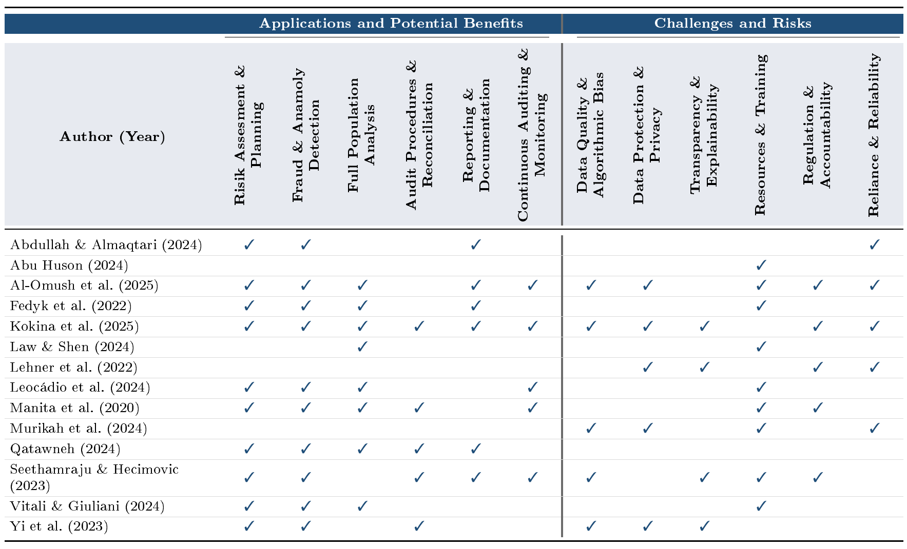

This chapter presents the results of a systematic literature review on the potential applications and challenges of AI in accounting firms. The identified studies were evaluated using a conceptual matrix and categorized by topic. The aim is to identify the key areas of application for AI as well as the associated challenges in the audit process. The results are presented according to the identified categories and supported by findings from the literature (see Tbl. 2). This creates a structured foundation for discussing the impact of AI on quality management in accounting firms in the remainder of this thesis.

4.1 Use Cases and Benefits of AI in Auditing
This subchapter focuses on the first half of the concept matrix, the use cases and potential benefits of AI in audit. Overall, six categories were identified that will be further described in the following.
4.1.1 Risk Assessment and Planning
The first and major category in the analysed literature is the use for risk assessment and audit planning, where AI is primarily describes AI as a tool for analysing large volumes of data, forecasting audit-relevant developments, and identifying areas of risk. Predictive analytics can help to assess audit risks, create projections, and allocate resources more effectively in audit planning (Abdullah and Almaqtari, 2024, pp. 9–11; Vitali and Giuliani, 2024, p. 10). In addition, historical trends, internal and external data, and benchmarks from public databases can be used to identify high-risk areas of the client’s operations earlier and to inform audit-related decision-making (Fedyk et al., 2022, p. 945; Kokina et al., 2025, p. 8; Leocádio et al., 2025, p. 7; Manita et al., 2020, pp. 5–6). Technically, methods such as DL, classification techniques, and support vector regression can be used for this purpose (Yi et al., 2023, p. 129108). In addition, AI-supported dashboards enable ongoing risk monitoring and can provide guidance for selecting audit priorities (Al-Omush et al., 2025, p. 9; Seethamraju and Hecimovic, 2023, pp. 788, 795). The detection of fraud risks and anomalies is also understood as a contribution to risk assessment, as conspicuous patterns can be identified more precisely and incorporated into planning (Qatawneh, 2025, pp. 1402–1405). Overall, AI does not replace the auditor’s judgment, but it can support planning through more structured risk indicators and more comprehensive data analyses.
4.1.2 Fraud and Anomaly Detection
The second biggest category of the use cases and potential benefits of AI in auditing is the use for fraud detection and anomaly detection. Here, AI is primarily used to identify suspicious patterns, unusual transactions, and high-risk entries. Several studies describe how AI can automatically detect anomalies, outliers, and potentially fraudulent transactions, enabling auditors to respond more effectively and earlier to suspicious activities and focus their manual audit procedures (Abdullah and Almaqtari, 2024, p. 9; Al-Omush et al., 2025, pp. 10–11; Manita et al., 2020, pp. 5–6; Seethamraju and Hecimovic, 2023, p. 788; Vitali and Giuliani, 2024, p. 5). Technically, ML methods such as pattern recognition, classification methods, data mining and support vector regression are cited for this purpose (Kokina et al., 2025, pp. 7–8; Fedyk et al., 2022, p. 945; Yi et al., 2023, p. 129108). Another focus lies in the analysis of larger and, in some cases, unstructured data sets. NLP can evaluate emails, contracts, or other text data, thereby making fraud patterns visible more quickly. These patterns that would be harder to detect through manual review (Qatawneh, 2024, pp. 1402–1405). This gives the auditors the possibility of a full review, instead of only samples, so even larger data sets can be examined for anomalies (Al-Omush et al., 2025, pp. 10–11). In a specific case study, the company MindBridge as an example, offers the possibility of continuous detection of unusual transactions (Leocádio et al., 2025, p. 7). Overall, AI thus enhances fraud and anomaly detection through automated pattern recognition, broader data analysis, and a greater focus of manual review on suspicious cases.
4.1.3 Full Population Analysis
The third most discussed benefit in the reviewed literature is the possibility of full population analysis or exhaustive testing. Here the literature primarily associates AI with the ability to systematically analyse larger datasets, thereby reducing the reliance on selected samples. The selected literature describes how complete analysis of all data can replace sampling and support in analysing a bigger picture (Al-Omush et al., 2025, pp. 10–11; Law and Shen, 2025, p. 3659; Leocádio et al., 2025, p. 7). Thus, AI is understood not only as a tool for increasing efficiency but also as a means of identifying audit-relevant anomalies within a broader population. This is particularly relevant when large volumes of transaction data are available, where a manual full audit would be practically impossible to carry out. Therefore changing the risked-based approach of auditing to a comprehensive data-driven approach (Manita et al., 2020, pp. 5–6). In addition to transaction-related data, unstructured or semi-structured documents are also cited as areas of focus. NLP algorithms can, for example, read lease agreements, highlight critical information, or extract relevant terms and contract provisions (Kokina et al., 2025, pp. 6–8; Fedyk et al., 2022, p. 945; Vitali and Giuliani, 2024, p. 6). Qatawneh also describes how NLP can thereby relieve auditors of routine evaluations (Qatawneh, 2025, pp. 1402–1405). At the same time it could also improve audit quality through the reduction of errors while putting in data (Law and Shen, 2025, p. 3659). Overall, the literature thus suggests that AI can support comprehensive testing through the automated analysis of extensive transaction data and document-based information, thereby enabling a broader capture of suspicious findings and allowing manual audit procedures to be more strongly focused on the assessment of relevant results.
4.1.4 Audit Procedures and Reconciliation
In the sources examined, AI is primarily described as a tool to support the automation and structuring of individual audit steps. This could possibly help auditors to refocus more of their capacities on strategic tasks (Manita et al., 2020, pp. 4–5; Qatawneh, 2025, p. 1402). A key area of application lies in the analysis and reconciliation of transaction-related data, such as in revenue analyses through the comparison of invoices and purchase orders (Fedyk et al., 2022, p. 945). Furthermore, AI-supported workflows can contribute to process optimization and decision support by structuring audit-relevant information and linking individual work steps within the audit process more efficiently (Kokina et al., 2025, p. 7). In addition to traditional reconciliation procedures, more operational audit procedures are also mentioned. For example, computer vision can be used during physical inventory counts to automatically tally stock levels (Kokina et al., 2025, p. 8). Drones, for example, can be used for this purpose (Fedyk et al., 2024, p. 945). Additionally, estimating revenue based on external factors such as weather or traffic is described as a potential application of AI (Kokina et al., 2025, p. 7). Other possible applications of AI-based methods in finance-related tasks are examples such as asset pricing or corporate value assessment (Yi et al., 2023, p. 129108). Overall, this illustrates that AI can complement audit procedures and reconciliation processes primarily through automated data matching, supportive workflows, and the integration of additional analytical methods.
4.1.5 Reporting and Documentation
In the context of reporting and documentation, the analysed literature primarily associates AI with the automated creation, structuring, and formatting of audit-related documents such as financial reports (Abdullah and Almaqtari, 2024, p. 11; Kokina et al., 2025, p. 8; Qatawneh, 2025, p. 1402). In particular, generative AI is cited as a tool for creating draft reports, which can support preparatory activities in audit documentation (Kokina et al., 2025, p. 8). Furthermore, Al-Omush et al. (2025, p. 10) describe that AI can not only support the preparation of detailed audit reports, but also contribute to reducing errors in these reports. In this regard, Fedyk et al. (2022, p. 977) point out that the use of AI can be associated with an improvement in quality and a reduction in the likelihood of restatements. Also, in addition to report preparation and restatement reduction, the use of AI also affects the ongoing communication of audit results. Seethamraju and Hecimovic (2023, p. 788) describe a shift from simple financial reports toward more continuous monitoring and reporting to stakeholders. Overall, the literature suggests that AI can support reporting and documentation primarily through automated report drafts, structured document creation, and more data-driven forms of communication, while responsibility for content and the final review of reports remains with the auditors.
4.1.6 Continuous Auditing and Monitoring
In the literature reviewed, AI is primarily associated with a more timely and process-integrated monitoring of audit-relevant information in the context of continuous auditing and continuous monitoring. Several sources describe how AI can enable continuous monitoring of transactions, compliance metrics, and other audit-relevant data, thereby ensuring that suspicious developments are not only identified during subsequent audit procedures (Al-Omush et al., 2025, pp. 9–10; Leocádio et al., 2025, pp. 7–8; Manita et al., 2020, p. 6; Seethamraju and Hecimovic, 2023, p. 788). Through this Stakeholders can be more timely informed (Seethamraju and Hecimovic, 2023, p. 788). A technical example is cited here by Kokina et al. (2025, p. 8), who cite chatbots as an information management tool that can accompany various stages of the audit and make audit-relevant information more accessible. Ultimately, these possibilities can support in raising and maintaining quality in audit (Manita et al., 2020, p. 6).
4.2 Challenges and Risks of AI in Auditing
The following subchapter focuses on the second part of the concept matrix, the challenges of the use of AI in audit. Through the synthesis of the literature from the review, six categories of challenges were identified that are will be further described here.
4.2.1 Data Quality and Algorithmic Bias
One of the key obstacles to the use of AI is the availability and quality of data and the resulting risk of algorithmic bias as resulting significant challenge. Poor data quality, insufficient digitization of client data and a lack of compatibility between the applications used by auditors and clients’ existing systems often complicates technical implementation and use of AI (Seethamraju and Hecimovic, 2023, pp. 789, 791–792). These incomplete or erroneous datasets promote the emergence of biases within the models (Kokina et al., 2025, pp. 11–12; Murikah et al., 2024, pp. 6–7; Al-Omush et al., 2025, pp. 12–13). A variety of factors beyond data gaps and erroneous data, such as demographic homogeneity, spurious correlations, and inappropriate comparison groups, further exacerbate this problem (Murikah et al., 2024, pp. 5–7). In the worst-case scenario, this form of bias can lead to negative and ethically questionable results like algorithmic discrimination against vulnerable groups (Seethamraju and Hecimovic, 2023, p. 792; Yi et al., 2023, p. 129118). There is a risk that embedded cognitive biases may even intensify over time due to the previously flawed results (Murikah et al., 2024, p. 11). Through this problem, the specific concern arises that content provided by clients may itself have been generated by AI and could therefore contain undetected errors (Kokina et al., 2025, p. 14).
4.2.2 Date Protection and Privacy
Data and privacy protection represent one of the most sensitive hurdles to the integration of AI into the auditing profession (Yi et al., 2023, pp. 129117–129118). In this context, there are significant concerns regarding the potential monetization of client data by accounting firms (Kokina et al., 2025, p. 12). Uncontrolled use of information also carries the risk of serious data breaches within audit processes (Murikah et al., 2024, p. 6). In particular, strict European data protection requirements mandate human-performed audits as well as comprehensive explainability of all automated actions (Lehner et al., 2022, p. 120). These multifaceted concerns regarding the confidentiality and security of the data set necessitate robust protective mechanisms when applying new technologies such as AI in auditing (Al-Omush et al., 2025, p. 15).
4.2.3 Transparency and Explainability
The “black box” nature of AI often leads to a significant lack of trust in the field of auditing (Seethamraju and Hecimovic, 2023, p. 792). Since the decision-making processes of highly complex models are scarcely intuitive for humans to grasp, the logic behind the generated results often remains hidden (Yi et al. 2023, p. 129118). This lack of explainability also makes it difficult for auditors to adequately document or provide technical justification for the decisions made to regulatory authorities (Kokina et al., 2025, pp. 10–11). Yet transparency is an indispensable prerequisite for ethical awareness in the use of the technology and serves as a fundamental basis for reliability and accountability. In particular, European data protection requirements in this context mandate that all actions performed by AI remain verifiable by humans and fully explainable (Lehner et al., 2022, pp. 120–121).
4.2.4 Resources and Training
The most extensively discussed category of the analysed studies is the challenges and risks associated to resources (e.g. human capital) and training in accounting firms. The results suggest that the use of AI has especially far-reaching implications for human capital in accounting firms. As the automation of standardized audit tasks increases, the demands placed on employees are changing. In addition to audit-specific knowledge, skills in handling data analysis, AI applications, and digital technologies are becoming increasingly important. As a result, the focus of work is shifting from performing repetitive routine tasks to assessing and monitoring technology-supported processes with critical thinking (Abu Huson et al., 2024, pp. 107–108; Leocádio et al., 2025, p. 11; Manita et al., 2020, p. 7). This could also raise the attractiveness of the auditor profession by making it less repetitive and more stimulating (Manita et al., 2020, p. 7), but at the same time, the sources examined show that adapting the workforce to these changes presents challenges. Building the necessary competencies requires investment in continuing education and technological infrastructure. Smaller accounting firms, in particular, sometimes encounter financial and organizational limitations in this regard (Al-Omush et al., 2025, p. 12; Seethamraju and Hecimovic, 2023, pp. 790–791). Some authors also point out that the use of AI could limit traditional learning and development opportunities, as entry-level professionals have fewer opportunities to gain practical experience by performing standardized audit procedures (Seethamraju and Hecimovic, 2023, p. 791; Vitali & Giuliani, 2024, p. 6). In the long-term, this could have a negative influence on the critical thinking skills of auditors (Murikah et al., 2024, p. 6).
Furthermore, the demand for employees with technical or science qualifications is increasing (Manita et al., 2020, p. 7; Vitali and Giuliani, 2024, p. 7), and recruiting them in an increasingly competitive labour market can pose additional difficulties (Vitali & Giuliani, 2024, p. 7). In addition to the changing skill requirements, the literature also discusses potential impacts on the employment structure. Since AI can take over repetitive tasks in particular, a decline in certain job categories at the entry-level is considered possible (Fedyk et al., 2022, pp. 973–974; Vitali & Giuliani, 2024, p. 6). Law and Shen (2025, pp. 3659–3660), on the other hand, conclude that demand for staff at the lower- to mid-level experience range is actually increasing due to the growth of accounting firms’ business driven by the use of AI, and that recruiting is focusing more on soft skills and an affinity for working with general-purpose software rather than expertise in complex systems.
Overall, the findings illustrate that the successful implementation of AI does not depend solely on technological factors, but also, to a significant extent, on the ability of accounting firms to prepare their employees for the changing requirements.
4.2.5 Regulation and Accountability
In the category of regulation and standards, the literature primarily describes AI as a challenge to existing auditing standards, governance structures, and regulatory frameworks. In the analysed literature the lack of specific guidance is highlighted as a particular issue. Among other things, a shortage of AI-related governance frameworks that could serve as guidance for practical application is cited (Al-Omush et al., 2025, p. 15; Kokina et al., 2025, pp. 14–15; Manita et al., 2020, p. 6; Seethamraju and Hecimovic, 2023, pp. 793–794). Especially the shift from a primarily risk-based audit approach to a more comprehensive data-driven audit poses new challenges for existing quality management standards, as traditional control and safeguards must be better adapted to the use of large volumes of data and automated analytical methods (Manita et al., 2020, p. 7). Meaning that these regulatory frameworks lag behind technological progress while also serving as an important foundation for public acceptance of AI (Al-Omush et al., 2025, p. 15). Furthermore, Kokina et al. (2025, p.9) highlights general concerns regarding the use of AI that may arise from high regulatory barriers in financial reporting. While Seethamraju and Hecimovic (2023, pp. 793–794) also point to a limited willingness on the part of regulatory authorities to review AI audits. Finally, the issue of accountability is described as a challenge. Lehner et al. argue that responsibility does not lie solely with the decision to use AI, but also concerns developers, individuals with influence over training data, and other actors involved in the creation and use of AI (Lehner et al., 2022, p. 122).
4.2.6 Reliance and Reliability
The literature on the use of AI in auditing addresses both the reliability of AI-generated results and the risk of overreliance on these systems. Kokina et al. (2025) point out that auditors may place too much trust in the results of AI applications, thereby causing their own professional judgments to take a back seat. This risk of excessive reliance becomes particularly relevant in light of increasingly complex AI systems, whose results cannot always be readily understood or evaluated. This leads to uncertainties regarding the reliability of AI-generated results. In this context, the authors also underline a lack of assessment criteria for evaluating the result quality, as well as to the ongoing development of the systems, which can overwhelm staff during use and evaluation (Kokina et al., 2025, pp. 13–14). Murikah et al. (2024, p. 6) also address the issue of dependency and see the risk that critical thinking skills may be lost due to an increasing reliance on AI systems. In addition, Lehner et al. (2022, p. 124) emphasize that trust in the actions and results of AI forms the basis for users’ decision to utilize AI and its results in the first place. This trust is also fundamental to the ethical application of AI. Abdullah & Almaqtari (2024, pp. 13–14) reach the same conclusion, emphasizing that acceptance of new technologies is a key factor in the successful implementation of AI. Overall, the analysed sources show that the challenge lies not only in the technical accuracy of AI systems, but also in the ability of evaluators to appropriately interpret their results, critically question them, and responsibly incorporate them into their own judgment.